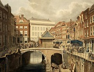
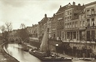

Utrecht
Utrechtse feitjes
- Op 2 juni 1122 kreeg Utrecht als een van de eerste steden in Nederland stadsrechten.
- De Domtoren is met 112,5 meter de hoogste kerktoren van Nederland.
- De Utrechtse grachten zijn uniek omdat ze werfkelders hebben.
- Met meer dan 125.000 fietsers per dag en de grootste fietsenstalling ter wereld, wordt Utrecht vaak genoemd als een van de meest fietsvriendelijke steden ter wereld.
- Opgericht in 1636, is de Universiteit Utrecht een van de oudste en grootste universiteiten van Nederland.
Vischmarkt te Utrecht
De Vismarkt is een straat langs de Oudegracht in de Nederlandse stad Utrecht. De circa 100 meter lange straat loopt van de Stadhuisbrug tot aan de Maartensbrug aan de oostzijde van de gracht. Halverwege de Vismarkt ligt vandaag de dag een brug die een pleintje vormt over de waterweg: de Kalisbrug. Tevens zijn er onder andere meerdere rijksmonumentale huizen, werfkelders en een werf te vinden. Omstreeks 1200 werd op deze plaats aan de voet van de burcht vis verhandeld en de Vismarkt vormt de oudste markt van Utrecht. De vis werd vers gehouden met behulp van korven die in de gracht werden gehangen. Een markt in zout vond daarnaast rond 1200 plaats op deze locatie, het straatje aan de westzijde van de gracht is er naar vernoemd. Tussen 1250 en 1325 werden twee nieuwe bruggen halverwege de Vismarkt gebouwd: de Kalisbrug of Visbrug tezamen met de Corduanierbrug.
De Oudegracht
De Oudegracht is de bekendste gracht in de Nederlandse stad Utrecht. De ongeveer twee kilometer lange gracht is te beschouwen als het verbindingsstuk tussen de Kromme Rijn en de Vecht en doorsnijdt de gehele binnenstad van zuid naar noord. Eeuwenlang is zij de hoofdader van de stad geweest. Het systeem van werven en werfkelders van de Utrechtse Oude- en Nieuwegracht is op deze schaal uniek in de wereld. In 2008 was er sprake van een voordracht van het grachten-, bruggen- en wervenstelsel voor de werelderfgoedlijst van UNESCO, maar zo'n nominatie heeft nog niet plaatsgevonden.